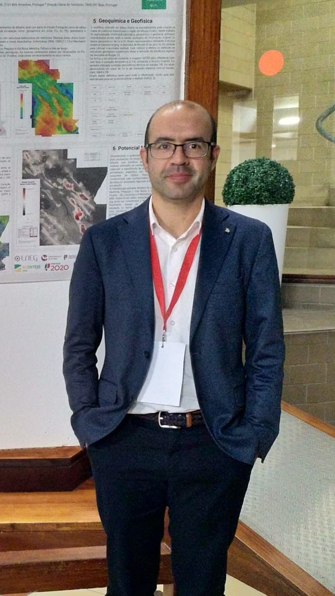
Pedro Miguel da Mata Gonçalves
Senior Remote Sensing & GIS Specialist
About me
Results-driven Geography and GIS professional with Master's degree in Geographic Information Systems and Spatial Planning. Accomplished drone pilot with hundreds of successful missions specializing in LiDAR data collection and photogrammetry. Passionate about leveraging cutting-edge geospatial technologies, remote sensing, and big data analytics to solve complex problems and drive innovative solutions.
Expertise spans across advanced GIS analysis and spatial modeling, with specialized proficiency in drone operations for aerial data collection. Demonstrated strength in remote sensing and satellite imagery analysis, coupled with big data processing capabilities for comprehensive geospatial analytics. Strong foundation in cartographic design, visualization techniques, and physical geography analysis enables effective communication of complex spatial relationships to diverse audiences.
Committed to delivering high-quality geospatial solutions that integrate traditional GIS methodologies with modern remote sensing technology and big data analytics, transforming complex datasets into actionable insights through collaborative teamwork and innovative problem-solving approaches.
Current Position
Senior Technician Current
Leading GIS and remote sensing applications for geological mapping, mineral exploration, and geohazard assessment. Managing international research projects and developing innovative methodologies for geological data analysis.
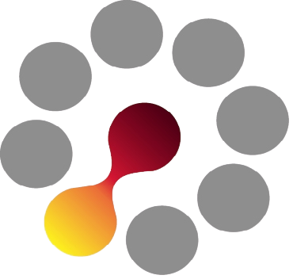
Previous Experience
Research Fellow 2016-2019
Ossa-Morena Zone spatial data acquisition, processing and dissemination. Construction of geodatabases and creation of mineral prospectivity mapping for the Moura-Ficalho Region using Analytical Hierarchy Process (AHP) methodology.
Board Member 2016-Present
Active board member contributing to the advancement of GIS technologies and methodologies in Portugal. Promoting best practices and professional development in the geospatial community.
Research Assistant 2013-2014
Research scholarship focusing on spatial data acquisition and centralization of information. Georeferencing of large volumes of maps at different scales and comprehensive map production for geological and mineral resource projects.
Teaching Assistant 2011-2013
Monitor for Master's program in Geographic Information Systems and Territorial Planning. Assisted students with GIS analysis, spatial modeling, and research methodologies.

GIS Technician 2010-2011
Technical support for GIS laboratories and research projects. Provided expertise in spatial analysis, data management, and cartographic production.
Research Projects Portfolio
GENESIS
Nature-based solutions for climate change resiliency of critical water infrastructure, combining Macaronesian approaches with state-of-the-art methods.
Mozambique Hydrogeological Mapping
Comprehensive modernization of Mozambique's hydrogeological mapping systems using advanced remote sensing and GIS technologies.
Xtract - Zero Emission Mining
Developing innovative micro-invasive technologies for sustainable and decarbonized extraction, introducing the Zero Emission Mine concept.
Skills & Technology
Cartographic Design
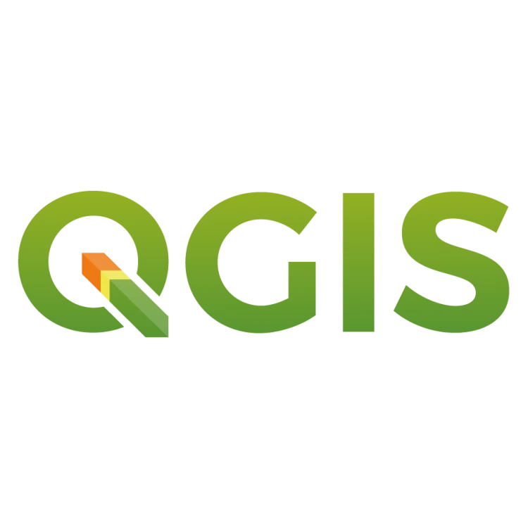
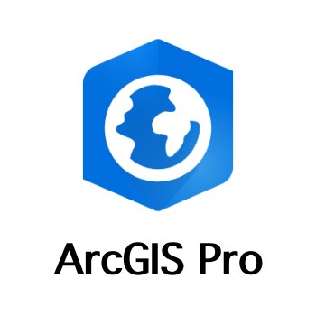
Spatial Data Creation and Analysis
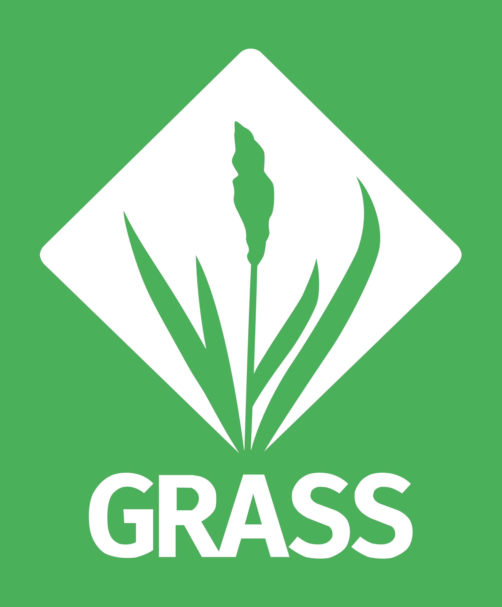
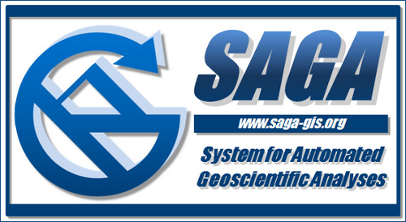
Satellite Remote Sensing
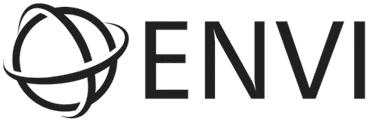

UAV Operations
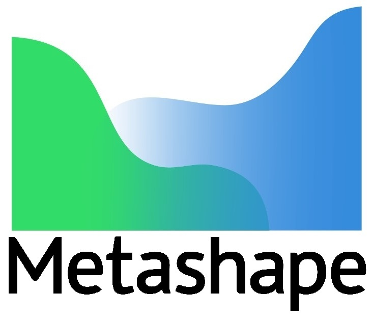
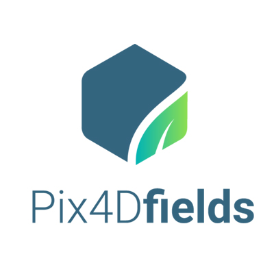
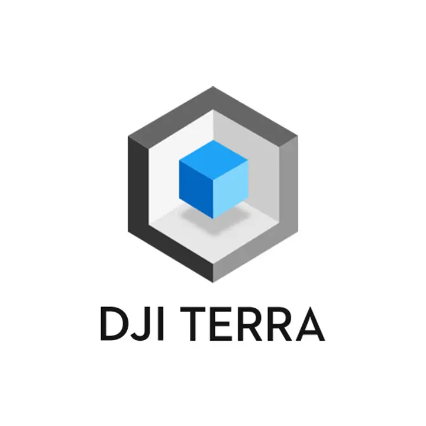
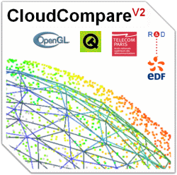
Field Data Acquisition
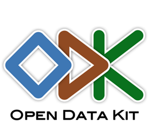
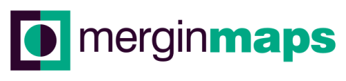
SQL and Databases
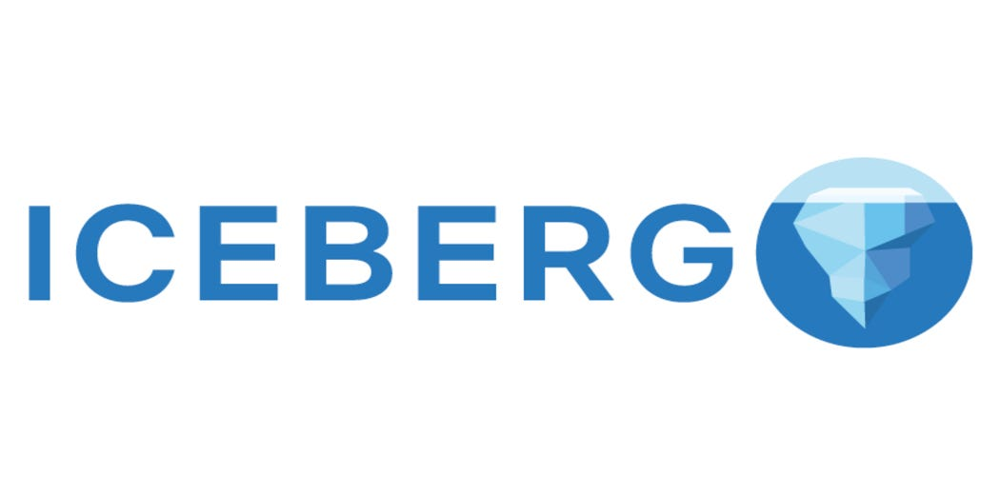
Programming and Automation

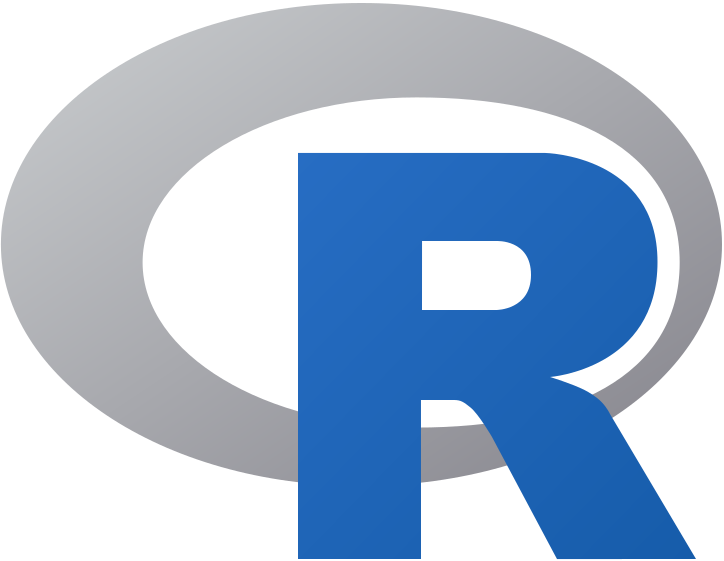

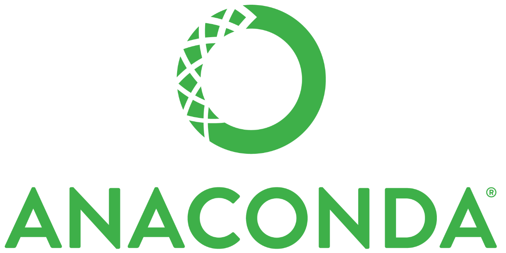
Big Data Analytics - Mineral Prospectivity
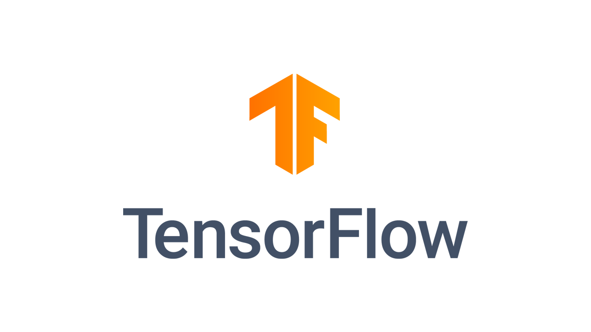
Key Publications
Unlocking the Secondary Critical Raw Material Potential of Historical Mine Sites
Comprehensive study on secondary critical raw materials from historical mining sites in Southern Portugal, focusing on sustainable resource recovery methodologies.
3D Constrained Gravity Inversion and TEM Analysis for New Target Generation
Advanced geophysical analysis for mineral exploration in the Neves-Corvo VMS mine region, Iberian Pyrite Belt, integrating multiple geophysical datasets.
Multispectral and Hyperspectral Remote Sensing in the Portuguese Sector of the Iberian Pyrite Belt
Comprehensive remote sensing study utilizing multispectral and hyperspectral data for geological characterization and mineral exploration in southern Portugal.
Flood Hazard Assessment: Santa Cruz do Bispo Sector, Leça River, Portugal
Methodological contribution to improve land use planning through advanced flood hazard mapping and hydraulic modeling techniques.
Current Research Projects
GENESIS Ongoing
Geologically Enhanced Nature-based Solutions for climate change resiliency of critical water Infrastructure. Developing innovative geological solutions for climate-resilient water infrastructure systems.
Mozambique Hydrogeological Mapping Ongoing
Consulting Services for Updating and Upgrading the Hydrogeological Map of Mozambique. Technical development and modernization of hydrogeological mapping systems for sustainable water resource management.
GSEU - A Geological Service for Europe Ongoing
Contributing to the development of a comprehensive geological service platform for European geological surveys and research institutions.
Xtract - Sustainable Resource Recovery Ongoing
A Sustainable Ecosystem for the Innovative Resource Recovery and Complex Ore Extraction. Research on sustainable mining practices and innovative extraction technologies.
Education
PhD in Geographic Engineering
Thesis: "The applicability of remote sensing and machine learning algorithms for identifying critical and strategic mineral resources" - provisional title
Master's Degree in Geographic Information Systems and Spatial Planning
Thesis: "Flood prone areas assessment in Leça River - hydraulic modeling for two areas of Matosinhos municipality"
Bachelor's Degree in Geography
Thesis: "Flood risk assessment and civil protection"